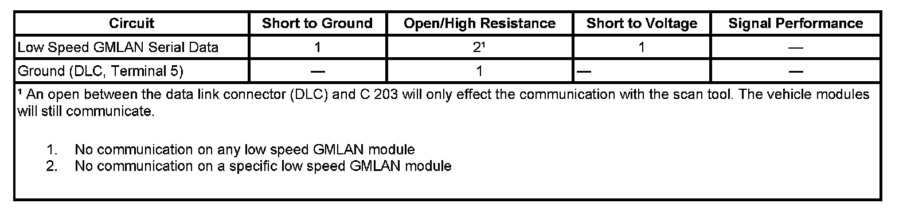

Scan Tool Does Not Communicate with Low Speed GMLAN Device
SCAN TOOL DOES NOT COMMUNICATE WITH LOW SPEED GMLAN DEVICE
DIAGNOSTIC FAULT INFORMATION

Perform the Diagnostic System Check - Vehicle prior to using this diagnostic procedure Initial Inspection and Diagnostic Overview.
CIRCUIT/SYSTEM DESCRIPTION
Modules connected to the low speed GMLAN serial data circuit monitor for serial data communications during normal vehicle operation. Operating information and commands are exchanged among the modules when the ignition switch is in any position other than OFF. The low speed GMLAN serial data circuit must be operational for the vehicle to start so the vehicle theft deterrent (VTD) module and body control module (BCM) can communicate. The low speed GMLAN serial data circuit uses SP203 as the common connection between the modules and the data link connector (DLC).
DIAGNOSTIC AIDS
- Use the Data Link References to identify the low speed GMLAN serial data modules.
- This test is used for a total low speed GMLAN communication failure. If only 1 module is not communicating and sets no DTC, ensure that the vehicle is equipped with the module, then use DTC U0100-U0299 for diagnostics.
- An open in the low speed GMLAN serial data circuit between the splice pack and a module will only effect the specific module. This type of failure will set a loss of communication DTC for each module effected, and the other modules will still communicate.
- An open in the DLC ground circuit terminal 5 will allow the scan tool to operate to set up the vehicle on the tool and then not communicate with the vehicle. When the scan tool is to the point of communicating with the vehicle, a message on the scan tool will indicate "no CANdi module detected" and will not communicate.
- An open between the DLC and C 203 will only effect the communication with the scan tool. The vehicle modules will still communicate, and the vehicle will start.
- The engine will not start when there is a total malfunction of the low speed GMLAN serial data circuit.The following conditions may cause a total loss of low speed GMLAN data communication:
- The low speed GMLAN serial data circuit shorted to ground or voltage.
- A module internal malfunction that causes a short to voltage or ground on the low speed GMLAN circuit.
- Use the DMM MIN/MAX function to capture/locate intermittent conditions.
CIRCUIT/SYSTEM TESTING
1. Test for less than 1 ohm of resistance between the DLC ground circuit terminal 5 and ground.
- If greater than 1 ohm, test the ground circuit for open/high resistance.
2. Ignition OFF, disconnect the harness connector at splice pack SP 300.
3. Ignition ON, with a scan tool, attempt to communicate with the instrument panel cluster (IPC). Communication should be available.
- If no communication, disconnect the modules still connected to the DLC one at a time, starting with the furthest from the DLC and attempt to communicate after each disconnect. When communication occurs, test the serial data circuit for a short to ground and a short to voltage between the last module disconnected and the previous module disconnected. If the circuit tests normal, replace the last module disconnected. If no communication is possible, test the serial data circuit for a short to ground, a short to voltage or an open/high resistance between the last module disconnected and the DLC. If the circuit tests normal, replace the last module disconnected.
4. Install a 3-amp fused jumper wire between pin A and pin M of the splice pack. Install another 3-amp fused jumper wire to pin L.
5. Using the open end of the jumper wire at pin L, connect to splice pack terminals B through K and attempt to establish communications with each module connected to the splice pack, one at a time. Each module should be able to communicate.
- If communications cannot be established with any module after connecting an individual module, replace the module that caused the no communication.
REPAIR INSTRUCTIONS
Perform the Diagnostic Repair Verification after completing the repair.
- Control Module References for module replacement, setup, and programming
- GMLAN Wiring Repairs Verification Tests Programming and Relearning